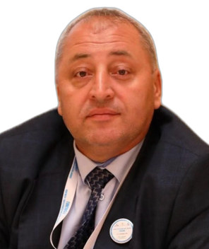

Profil
Tofiq Aydarov 2020-ci ildən menecment və marketinq kafedrasının müdiridir. 1993-1999-cu illərdə M. Auezov adına Cənubi Qazaxıstan Dövlət Universitetində mühəndis-iqtisadçı ixtisası alıb, 2004-cü ildə iqtisad elmləri namizədi, 2007-ci ildə assosiasiyalı professor adını alıb. 1992-1999-cu illərdə Ontustikus səhmdar cəmiyyətində iqtisadçı olub. Göstərilən məqalələr aqrar-sənaye kompleksi, energetika, toxuculuq və regional əməkdaşlığa aiddir.
İş təcrübəsi
Menecment və marketinq kafedrasının müdiri
2020–hazırdaMenecment və marketinq kafedrası
Ontustikus səhmdar cəmiyyəti
1992–1999İqtisadçı
Təhsil
Dosent
2007İqtisad elmləri namizədi
2004Diplom
1993–1999Mühəndis-iqtisadçı
M. Auezov adına Cənubi Qazaxıstan Dövlət Universiteti
Nəşrlər
Rəylənmiş (peer-reviewed) jurnal məqalələri
1. Aydarov, T. The textile industry in the context of achieving the Sustainable Development Goals: world experience and implementation in Kazakhstan. Izvestiya Vysshikh Uchebnykh Zavedenii, Tekhnologiya Tekstilnoi Promyshlennosti, 2024, no. 2 (410). Scopus and CAS.
2. Aydarov, T. Methodology for a forecast assessment of the economic efficiency of a project. Nauchnyi almanakh, Tambov, 2024, no. 3-3 (113), pp. 45–49.
3. Aydarov, T. Digitalization of the economy as a factor in solving social problems. Nauchnyi almanakh, Tambov, 2024, no. 2-2 (112), pp. 41–44.
4. Aydarov, T. Priorities for the development of human capital under the innovative industrialization of Kazakhstan. Nauchnyi almanakh, Tambov, 2024, no. 1-2 (111), pp. 38–42.
5. Aydarov, T. Perspective directions of economic cooperation between Kazakhstan and Uzbekistan in the vegetable-oils segment. Vestnik universiteta Turan, 2024, no. 1 (101), pp. 170–183.
6. Aydarov, T. The formation and current state of development of the carpet industry in the Republic of Kazakhstan: the influence of foreign innovative experience. Academic Journal of Interdisciplinary Studies, vol. 13, no. 4, July 2024. Richtmann Publishing, London.
7. Aydarov, T. Problematic issues in the development of the agro-industrial complex in the Republic of Kazakhstan. Nauchnyi almanakh, Tambov, 2023, no. 12-2 (110), pp. 26–30.
8. Aydarov, T. Forecast assessment of the state of the agro-industrial complex. Nauchnyi almanakh, Tambov, 2023, no. 12-2 (110), pp. 30–34.
9. Aydarov, T. The textile industry in the new realities: consequences of the pandemic, world experience and further development in Kazakhstan. Tekhnologiya tekstilnoi promyshlennosti, Ivanovo, 2022, no. 1 (397), pp. 33–38. Scopus.
10. Aydarov, T. The regional economic system as an institution in the national economy. Statistika, uchet i audit, 2021, no. 1 (80), pp. 87–92.
11. Aydarov, T. The agro-industrial complex of the Turkestan region under economic modernization. Problemy agrorynka, July–September 2018, no. 3, pp. 127–134.
12. Aydarov, T. Power engineering in agriculture and its efficiency. International Journal of Advanced and Applied Sciences, 2018, vol. 5, issue 3, pp. 13–25. Taiwan.
13. Aydarov, T. Environmentally clean products of subtropical crops in the South Kazakhstan region using advanced technologies. Problemy agrorynka, April–June 2017, no. 2, pp. 112–117.
14. Aydarov, T. Problems and prospects of the regional agro-industrial complex. European Journal of Natural History. Sovremennye problemy nauki i obrazovaniya, 2017, no. 3, pp. 8–10, Dubai.
15. Aydarov, T. Models of the managerial decision-making process in the fuel and energy complex of a region. Vestnik Kazakhskogo tekhnicheskogo universiteta, no. 1 (137), pp. 145–150.
Konfrans məqalələri və tezisləri
1. Aydarov, T. Analysis of livestock-market infrastructure development. X International Conference Industrial Technologies and Engineering (ICITE-2023), vol. IV, M. Auezov South Kazakhstan University, Shymkent, Kazakhstan, 18 November 2023, pp. 28–35.
Patentlər və proqram təminatı
1. Aydarov, T. Consulting and information support for business entities. Copyright registration, 4 May 2022.
2. Aydarov, T. Improving organizational culture at an enterprise as a factor of efficiency. Copyright registration, 26 May 2023.
3. Aydarov, T. Features of marketing management at agro-industrial enterprises. Copyright registration, 6 May 2022.
4. Aydarov, T. Improving the efficiency of environmental-management at an enterprise. Copyright registration, 26 May 2023.
5. Aydarov, T. Regulation of socio-psychological factors in the efficiency of a firm. Copyright registration, 12 June 2024.